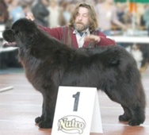

<table border="0" class="layout">
    <tbody style="text-align: left;">
        <tr style="text-align: left;">
            <td valign="top" style="text-align: left;">
                <div class="holster">
                    <div class="block_container s3 b-text b-static-text user_css_12816005438" id="e_127779774638"></div>
                    <div class="block_container s3 b-image txt-center" id="e_1282743837207"></div>
                    <div class="block_container s3 b-image txt-center"></div>
                    <div class="block_container s3 b-image txt-center" style="text-align: center;">Наши заводчики:</div>
                    <div class="block_container s3 b-image txt-center" style="text-align: center;"></div>
                    <div class="block_container s3 b-image txt-center" style="text-align: center;"><strong>Зотов Андрей -</strong></div>
                    <div class="block_container s3 b-image txt-center" style="text-align: center;"><span style="font-size: 8pt;">добро пожаловать к нам:</span></div>
                    <div class="block_container s3 b-image txt-center" style="text-align: center;"><strong><a href="http://www.potap-hotel.ru/">"Потап"</a></strong></div>
                    <div class="block_container s3 b-image txt-center" style="text-align: center;"></div>
                    <div class="block_container s3 b-image txt-center" style="text-align: center;"></div>
                    <div class="block_container s3 b-image txt-center" style="text-align: center;"><strong>Витковская Наталья - </strong></div>
                    <div class="block_container s3 b-image txt-center" style="text-align: center;"><span style="font-size: 8pt;">добро пожаловать к нам:</span></div>
                    <div class="block_container s3 b-image txt-center" style="text-align: center;"><a href="http://severtan.narod.ru/"><strong>"Севертан"</strong></a></div>
                    <div class="block_container s3 b-image txt-center" style="text-align: center;"><strong> </strong>тел.: 8-903-560-75-06<strong><br /></strong></div>
                </div>
            </td>
            <td valign="top" style="text-align: left;">
                <div class="holster">
                    <div class="block_container s3 b-text b-static-text user_css_12816005438" id="e_128274378855">
                        <p style="text-align: center;"><span style="color: #006600;"><span style="color: #0000ff;"><strong>Ньюфаундленд </strong></span></span></p>
                        <p style="text-align: justify;"><span style="color: #006600;"><span style="color: #0000ff;"><strong>Из истории породы:</strong> предки этой собаки принципе неизвестны. Некоторые считают, что её прародителей завезли на Ньюфаундленд в 10 веке викинги. Другие полагают. Что порода происходит от пиренейских горных собак, прибывших на остров с рыбаками-эмигрантами из Франции. Как бы там ни было, ньюфаундленд окончательно сформировался на канадском острове, стал отличным спасателем и упряжным животным. В 18 веке его завезли в Британию и Францию, и он быстро стал любимой корабельной собакой английских моряков. Шотландский писатель Дж. М. Барри изобразил своего ньюфаундленда в образе собаки по клички Нана в романе "Питер Пэн". </span></span></p>
                        <p style="text-align: justify;"><span style="color: #006600;"><span style="color: #0000ff;"><strong>Общая характеристика:</strong> характер уравновешенный, спокойный, доброжелательный, общительный. Приятная и покладистая собака. Очень ласкова к детям. Ньюфаундленды - прекрасные пловцы и ныряльщики, обладающие врожденным инстинктом спасать из воды людей и вытаскивать любые плавающие предметы. </span></span></p>
                        <p style="text-align: justify;"><span style="color: #006600;"><span style="color: #0000ff;"><strong>Содержание и уход:</strong> рекомендуются регулярные прогулки по твёрдому грунту. Ежедневно пользуйтесь жёсткой щеткой для ухода за шерстью. </span></span></p>
                        <p style="text-align: justify;"><span style="color: #006600;"><span style="color: #0000ff;"><strong>Размеры:</strong> рост 71 см (кобели), 66 см (суки). Вес 63-68 кг (кобели), 49-55 кг (суки).</span></span></p>
                        <p style="text-align: justify;"><span style="color: #006600;"><span style="color: #0000ff;">___________________________________</span></span></p>
                        <p style="text-align: justify;"><span style="color: #006600;"><span style="color: #0000ff;">&nbsp;</span></span></p>
                    </div>
                </div>
            </td>
        </tr>
    </tbody>
</table>​
